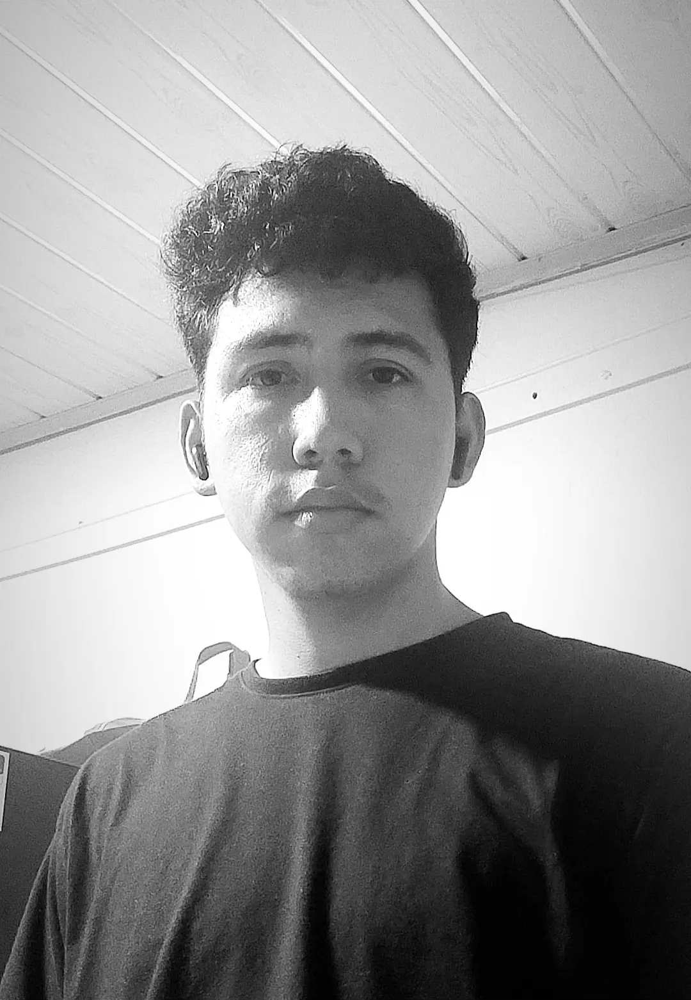

Sobre mí
¡Hola! Soy Yesid Casallas, un entusiasta de la innovación y un apasionado de la programación. Me encanta explorar nuevas tecnologías y aplicarlas en proyectos creativos. Aunque estoy empezando en este fascinante mundo, tengo una gran disciplina y respeto en todo lo que hago. Me motiva el aprendizaje continuo y siempre busco mejorar mis habilidades. Soy una persona comprometida y determinada a alcanzar mis metas, disfrutando cada paso del proceso.
Soy un apasionado del fútbol, disfruto cada partido y sigo de cerca a mis equipos favoritos. La música electrónica es mi compañera constante, ya sea para relajarme o para animarme mientras hago ejercicio. Además, la natación es una de mis actividades preferidas; me encanta la sensación de libertad que siento al deslizarme por el agua. Estas pasiones no solo me mantienen activo, sino que también enriquecen mi vida de múltiples maneras.
